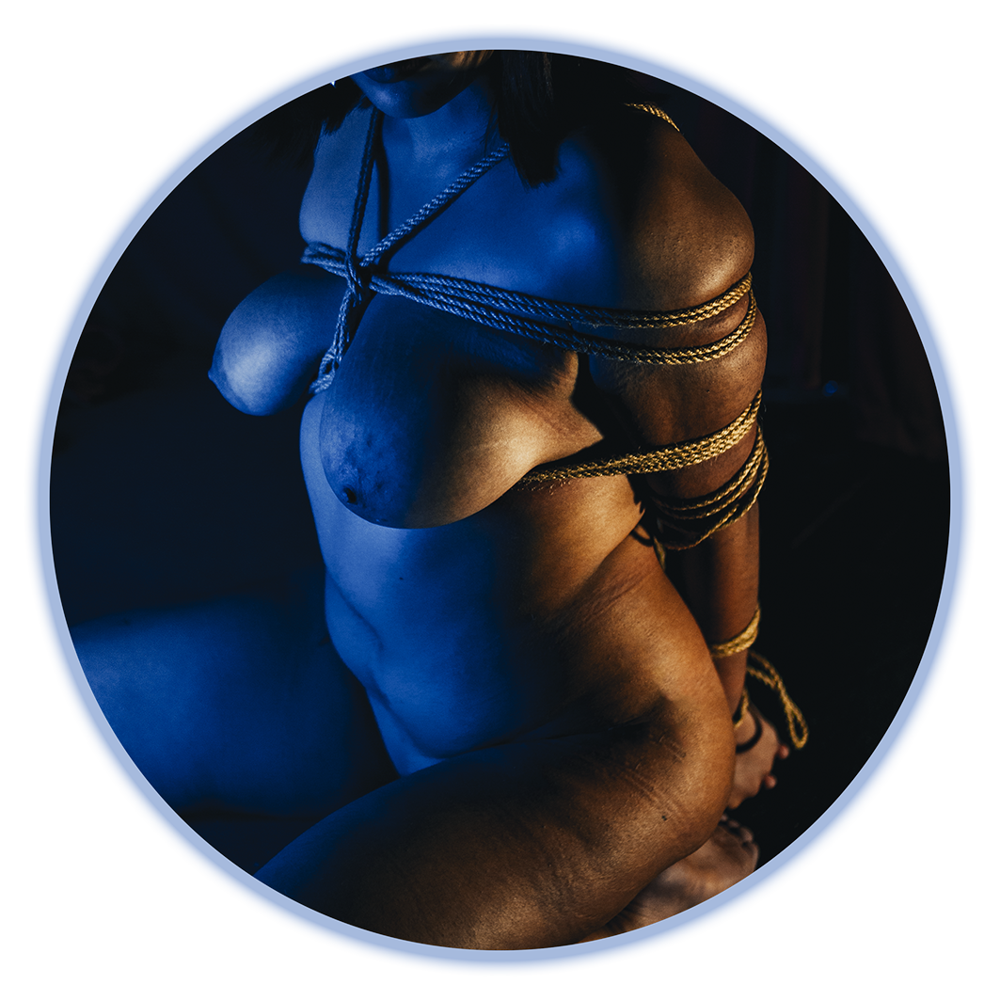
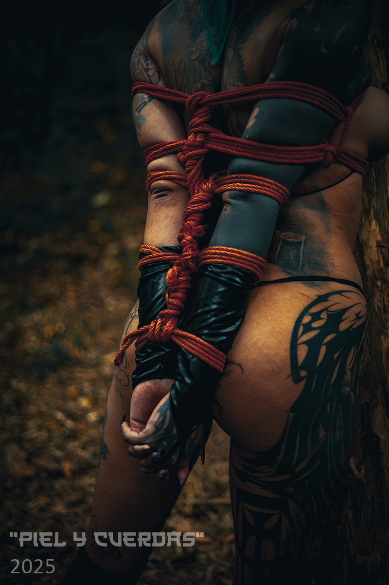

Quiénes somos
"Piel y Cuerdas" es un espacio educativo dedicado a la enseñanza del Shibari en Quito, Ecuador. Nuestro objetivo es transmitir esta práctica desde una perspectiva técnica, responsable y respetuosa con su origen cultural.
El proyecto busca ofrecer un entorno que desafíe las nociones preconcebidas de los participantes y en el que estos puedan aprender progresivamente las bases del manejo de cuerda, la comunicación y los principios de interacción psicológica de Dominación/sumisión que forman parte de esta disciplina.

Al mismo tiempo, reconocemos el origen y la naturaleza sadomasoquista del Shibari moderno, y no diluimos ni ocultamos ese elemento para adaptarlo a sensibilidades del público general. Nuestro enfoque consiste en abordar la práctica con claridad, rigor técnico y responsabilidad.
En Piel y Cuerdas abordamos el Shibari desde una línea que prioriza la intención, la tensión y el control consciente, entendiendo la cuerda como una herramienta de restricción y disciplina corporal, no como un recurso afectivo ni estético por sí mismo.
Este enfoque concibe la atadura como una práctica estructurada, donde el límite, la incomodidad y la responsabilidad forman parte del aprendizaje técnico, siempre dentro de un marco de consentimiento informado y seguridad.
